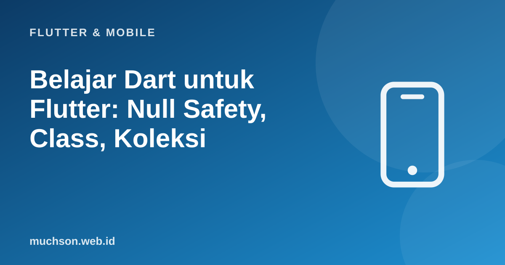

Beranda › Artikel › Flutter & Mobile
Flutter & MobileBelajar Dart untuk Flutter: Null Safety, Class, Koleksi
Flutter memakai bahasa Dart, dan pengalaman menulis aplikasi Flutter terasa jauh lebih ringan setelah Dart dikuasai. Kabar baiknya, bila Anda pernah memakai Java, JavaScript, atau Kotlin, Dart akan terasa akrab. Fitur yang paling penting dipahami sejak awal adalah null safety, yang menghilangkan satu kelas bug terbesar: akses ke nilai kosong.
Sebaiknya sudah paham: dasar pemrograman (variabel, fungsi, perulangan)

Setelah membaca dan mencoba materi ini, Anda mampu:
- memakai tipe dasar, var, final, dan const dengan benar
- memahami null safety: tipe nullable, ?, ??, ?., dan !
- menulis fungsi dengan parameter bernama dan opsional
- membuat class dengan konstruktor, getter, dan konstruktor bernama
- memakai List, Map, Set, serta metode map/where/fold
Contoh Flutter ditampilkan sebagai kode yang mengikuti dokumentasi Flutter 3.x (Material 3, Dart 3). Bagian logika Dart murni dijalankan sungguhan dengan Dart SDK agar keluarannya dapat dibuktikan; kode yang butuh Flutter (widget) tidak dijalankan di halaman ini.
Variabel dan tipe
void main() {
var nama = 'Ani'; // tipe String disimpulkan
int umur = 20;
double ipk = 3.75;
bool aktif = true;
final dibuat = DateTime(2026, 10, 30); // final: diisi sekali saat berjalan
const pi2 = 3.14159 * 2; // const: konstanta saat kompilasi
print('$nama ($umur) IPK $ipk aktif=$aktif'); // interpolasi string dengan $
print('Tahun depan: ${umur + 1}'); // ekspresi memakai ${...}
print(dibuat.year);
print(pi2.toStringAsFixed(2));
print(nama.toUpperCase().padLeft(6, '*'));
// umur = 'dua puluh'; // galat kompilasi: String tidak bisa ke int
}Ani (20) IPK 3.75 aktif=true
Tahun depan: 21
2026
6.28
***ANI
Null safety: nilai kosong harus dinyatakan
Pada Dart modern, tipe biasa (String) tidak boleh null. Bila nilai boleh kosong, tipenya diberi tanda tanya (String?) dan kompiler memaksa Anda menangani kasus null sebelum memakainya.
String? cariNama(int id) => id == 1 ? 'Ani' : null; // mungkin tidak ditemukan
void main() {
String? a = cariNama(1);
String? b = cariNama(9);
// print(b.length); // galat kompilasi: b bisa null
print(b?.length); // ?. : bila null, hasilnya null (tidak crash)
print(b ?? 'tidak ada'); // ?? : nilai cadangan
print(a!.length); // ! : "saya yakin tidak null" (crash bila ternyata null)
if (b != null) {
print(b.length); // di dalam if, Dart tahu b pasti tidak null (promosi tipe)
} else {
print('b kosong');
}
int? skor;
skor ??= 0; // ??= : isi hanya bila masih null
print(skor);
}null
tidak ada
3
b kosong
0
Fungsi: parameter bernama
Flutter memakai parameter bernama di mana-mana (Text("Halo", style: ...)). Di Dart, parameter bernama ditulis di dalam kurung kurawal dan dapat ditandai required.
// posisi biasa
int tambah(int a, int b) => a + b;
// bernama, dengan nilai bawaan dan required
String sapa({required String nama, String sapaan = 'Halo', bool seru = false}) {
return '$sapaan, $nama' + (seru ? '!' : '.');
}
// posisi opsional dengan []
String gabung(String a, [String? b]) => b == null ? a : '$a $b';
void main() {
print(tambah(2, 3));
print(sapa(nama: 'Ani'));
print(sapa(nama: 'Budi', sapaan: 'Selamat pagi', seru: true));
print(gabung('Muhammad'));
print(gabung('Muhammad', 'Muchson'));
// fungsi adalah nilai: dapat dikirim sebagai argumen
final angka = [1, 2, 3, 4, 5];
print(angka.map((x) => x * x).toList());
}5
Halo, Ani.
Selamat pagi, Budi!
Muhammad
Muhammad Muchson
[1, 4, 9, 16, 25]
Class dan konstruktor
class Produk {
final String nama;
final int harga;
int stok;
// konstruktor ringkas: this.nama langsung mengisi field
Produk({required this.nama, required this.harga, this.stok = 0});
// konstruktor bernama
Produk.dariMap(Map<String, dynamic> m)
: nama = m['nama'] as String,
harga = m['harga'] as int,
stok = (m['stok'] ?? 0) as int;
// getter: dihitung saat dibaca
bool get tersedia => stok > 0;
// method
int total(int jumlah) => harga * jumlah;
@override
String toString() => 'Produk($nama, Rp$harga, stok $stok)';
}
void main() {
final kopi = Produk(nama: 'Kopi Gayo', harga: 65000, stok: 10);
final teh = Produk.dariMap({'nama': 'Teh', 'harga': 40000});
print(kopi);
print(teh);
print('kopi tersedia: ${kopi.tersedia}, teh tersedia: ${teh.tersedia}');
print('3 kopi = Rp${kopi.total(3)}');
kopi.stok -= 3;
print(kopi.stok);
}Produk(Kopi Gayo, Rp65000, stok 10)
Produk(Teh, Rp40000, stok 0)
kopi tersedia: true, teh tersedia: false
3 kopi = Rp195000
7
Koleksi
void main() {
final tugas = <String>['tulis laporan', 'kirim surel', 'rapat'];
tugas.add('belajar Flutter');
print(tugas.length);
print(tugas.where((t) => t.contains('r')).toList());
print(tugas.map((t) => t.toUpperCase()).take(2).toList());
final nilai = <String, int>{'Ani': 90, 'Budi': 72, 'Citra': 85};
nilai['Dodi'] = 60;
nilai.forEach((k, v) => print('$k -> $v'));
final lulus = nilai.entries.where((e) => e.value >= 75).map((e) => e.key).toList();
print('lulus: $lulus');
final total = nilai.values.fold<int>(0, (jumlah, n) => jumlah + n);
print('rata-rata: ${(total / nilai.length).toStringAsFixed(1)}');
final unik = {1, 2, 2, 3, 3, 3};
print(unik);
// collection-if dan collection-for: dipakai sangat sering untuk membangun daftar widget
final admin = true;
final menu = ['Beranda', if (admin) 'Pengaturan', for (var i = 1; i <= 2; i++) 'Item $i'];
print(menu);
// spread
print([...tugas.take(1), ...menu.take(2)]);
}4
[tulis laporan, kirim surel, rapat, belajar Flutter]
[TULIS LAPORAN, KIRIM SUREL]
Ani -> 90
Budi -> 72
Citra -> 85
Dodi -> 60
lulus: [Ani, Citra]
rata-rata: 76.8
{1, 2, 3}
[Beranda, Pengaturan, Item 1, Item 2]
[tulis laporan, Beranda, Pengaturan]
Fitur modern Dart 3 yang perlu diketahui
| Fitur | Contoh | Kegunaan |
|---|---|---|
| Records | (String, int) pasangan = ("Ani", 20); | Mengembalikan beberapa nilai tanpa membuat class |
| Pattern matching | switch (x) { case int n when n > 0: ... } | Mendekonstruksi dan mencocokkan bentuk data |
| Sealed class | sealed class Hasil {} | Hierarki tertutup; switch dicek kelengkapannya |
| Enhanced enum | enum Status { baru("Baru"); final String label; ... } | Enum dengan data dan method |
| Extension methods | extension on String { bool get kosong => trim().isEmpty; } | Menambah method ke tipe yang sudah ada |
Contoh di halaman ini sengaja memakai fitur yang bekerja di Dart 2.12 ke atas agar dapat dijalankan di mana pun. Proyek Flutter terbaru memakai Dart 3, yang menambahkan records, pattern matching, dan sealed class di atas semua yang dibahas di sini.
1. Tulis class Mahasiswa dengan nim, nama, ipk (default 0.0) dan getter lulus (ipk >= 2.0).
class Mahasiswa { final String nim; final String nama; double ipk; Mahasiswa({required this.nim, required this.nama, this.ipk = 0.0}); bool get lulus => ipk >= 2.0; }2. Mengapa operator ! berisiko?
3. Ubah daftar harga [10000, 25000, 40000] menjadi daftar teks "Rp10000", dst.
harga.map((h) => "Rp$h").toList()4. Apa beda final dan const?
- Dart bertipe statis dengan null safety: String vs String?; tangani null dengan ?., ??, ??=, dan if.
- Parameter bernama dan required adalah pola utama di Flutter.
- Class dengan konstruktor ringkas, konstruktor bernama, dan getter.
- List, Map, Set dengan map/where/fold; collection-if dan collection-for untuk membangun UI.